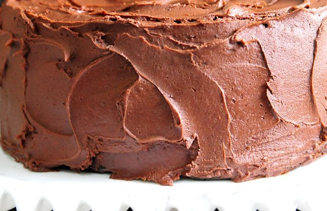

Chocolate Buttercream Frosting

Description
A creamy chocolate frosting that works perfectly with chocolate or vanilla cake. Easily adapted to be dairy free with simple substitutions.
Ingredients
- 1.5 cups butter (3 sticks), softened
- 1 cup unsweetened cocoa
- 5 cups confectioner's sugar
- 0.5 cup milk
- 2 teaspoons vanilla extract
- ½ teaspoon espresso powder
Directions
- Add cocoa to a large bowl or bowl of stand mixer. Whisk through to remove any lumps.
- Cream together butter and cocoa powder until well-combined.
- Add sugar and milk to cocoa mixture by adding 1 cup of sugar followed by about a tablespoon of milk. After each addition has been combined, turn mixer onto a high speed for about a minute. Repeat until all sugar and milk have been added.
- Add vanilla extract and espresso powder and combine well.
- If frosting appears too dry, add more milk, a tablespoon at a time until it reaches the right consistency. If it appears too wet and does not hold its form, add more confectioner's sugar, a tablespoon at a time until it reaches the right consistency.